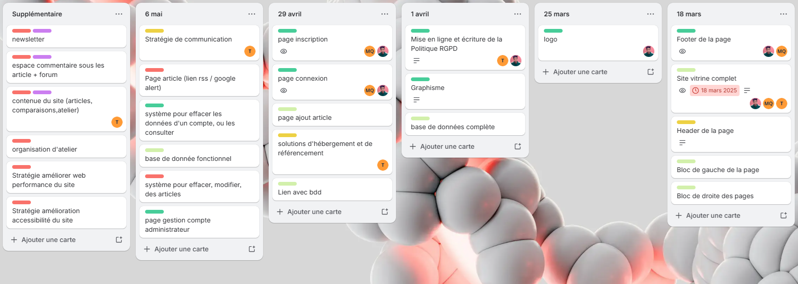

Atelier Professionnalisation – Projet 1SeuleTerre
De Septembre 2024 à Mai 2025 – Volume horaire : 100h en atelier + travail personnel
Présentation de 1SeuleTerre
1SeuleTerre est notre site web fais avec le Lycée Gaston Berger, dédiée à la sensibilisation aux enjeux du Green IT et de l'impact environnemental du numérique.
Son but est de prévenir les risques liés à l'écologie et à l'informatique, notamment auprès des étudiants, via des articles, des ateliers au CDI et des ressources en ligne.
Le site web permet aux utilisateurs de s'informer, de s'inscrire à des ateliers, et de consulter des articles sur des thèmes comme l'intelligence artificielle, le recyclage, ou l'éco-conception.
Objectif de l'AP
L'objectif principal de cet AP est de concevoir et développer un site web responsive en respectant les principes du Green IT et les exigences de la RGPD.
Le projet est organisé en jalons :
- Jalon 1 : Analyse, planification, outils collaboratifs, charte graphique
- Jalon 2 : Développement du site vitrine, base de données, RGPD, maquettes
- Jalon 3 : Finalisation du site, hébergement, référencement, stratégie de communication
Jalon 1 : Analyse et Planification
Le Jalon 1 a consisté à analyser les besoins, planifier les activités et mettre en place les outils collaboratifs.
Activités réalisées :
- Analyse des besoins : Recueil des attentes de l'association et des étudiants
- Planification : Établissement d'un planning détaillé (Trello) et répartition des tâches
- Mise en place des outils collaboratifs : Teams, Discord, GitHub, Trello
- Définition de la charte graphique : Logo, couleurs, polices
Outils utilisés :
Planning du projet :

Jalon 2 : Développement du Site Vitrine
Le Jalon 2 a permis de développer le site vitrine, la base de données, et de mettre en place la politique RGPD.
Fonctionnalités développées :
- Authentification sécurisée : Inscription, connexion, gestion des rôles (admin, utilisateur).
- Gestion des articles :
- Création, modification, suppression d'articles
- Upload d'images et gestion des types d'articles
- Gestion des ateliers :
- Inscription aux ateliers
- Suivi des inscriptions
- Pages statiques : Qui sommes-nous, RGPD, Cookies, Contact.
Contraintes techniques :
- Architecture MVC
- Responsive design
- Base de données MySQL
- Protection contre les injections SQL
- Respect de la RGPD
Exemple de code (inscription) :
function estMotDePasseValide($mdp) {
return preg_match('/^(?=.*[a-z])(?=.*[A-Z])(?=.*\d)(?=.*[\W]).{12,}$/', $mdp);
}
Captures d'écran :

{kind=link}
Jalon 3 : Finalisation et Hébergement
Le Jalon 3 a permis de finaliser le site, de le tester, et de préparer son hébergement et son référencement.
Fonctionnalités prévues :
- Hébergement : Choix d'un hébergeur vert
- Référencement : Balises méta, lien depuis le site de Gaston Berger
- Stratégie de communication : Réseaux sociaux, newsletters
Contraintes techniques :
- Optimisation des images
- Accessibilité numérique
- Performance web
Captures d'écran :


Compétences Mises en Œuvre
Gérer le patrimoine informatique
Recenser et identifier les ressources numériques : Base de données, serveurs, outils collaboratifs.
Exploiter des référentiels, normes et standards : Respect des bonnes pratiques de développement (MVC, Agile).
Mettre en place et vérifier les niveaux d’habilitation associés à un service : Gestion des rôles utilisateurs.
Gérer des sauvegardes : Sauvegarde de la base de données.
Répondre aux incidents et aux demandes d’assistance et d’évolution
Collecter, suivre et orienter des demandes : Gestion des retours utilisateurs.
Traiter des demandes concernant les services réseau et système, applicatifs : Résolution de bugs, améliorations.
Travailler en mode projet
Analyser les objectifs et les modalités d’organisation d’un projet : Planification et suivi avec Trello.
Planifier les activités : Respect des délais et des jalons.
Évaluer les indicateurs de suivi d’un projet et analyser les écarts : Analyse des écarts et ajustements.
Annexes
Maquettes et MCD/MLD
{kind=link}
Planning et Documents
{kind=link}
{kind=link}
Pages du site
Lien GitHub
Liste des pages principales :
- accueil.php
- article.php
- connexion.php
- inscription.php
- Qui_sommes_nous.php
- RGPD.php
- Cookies.php
- contact.php
Bilan et Perspectives
Cet atelier a été une expérience enrichissante, tant sur le plan technique que professionnel. J'ai pu contribuer à un projet concret, en travaillant en équipe et en appliquant les méthodes Agile.
Les compétences acquises me seront utiles pour mon insertion professionnelle, notamment dans les domaines du développement web, de la gestion de projet et de la sécurité informatique.